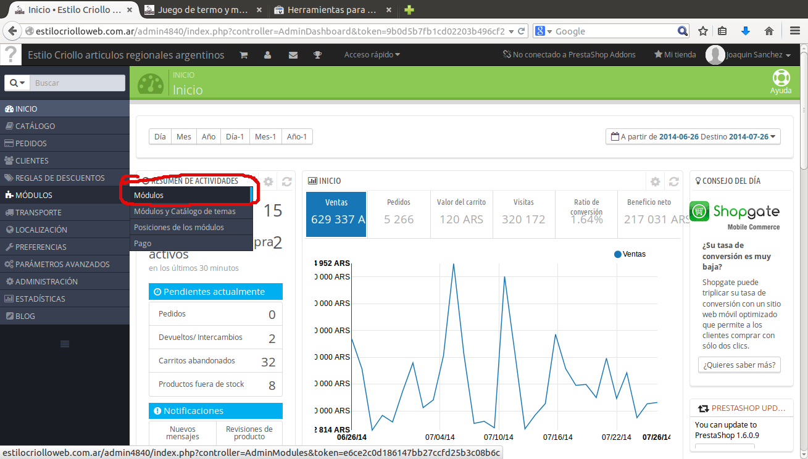
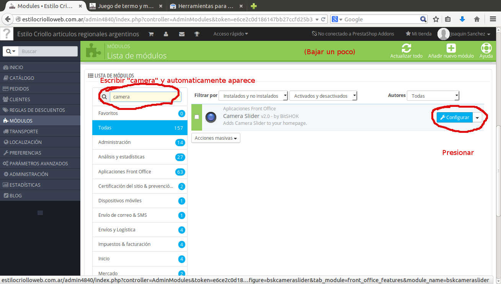
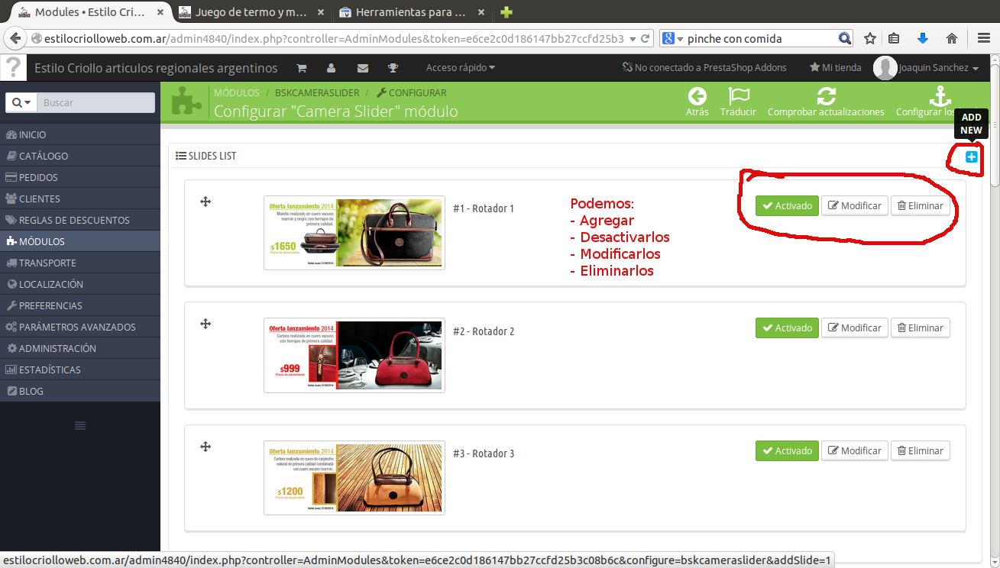
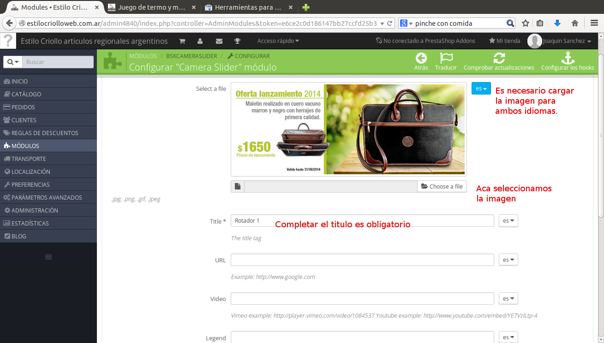
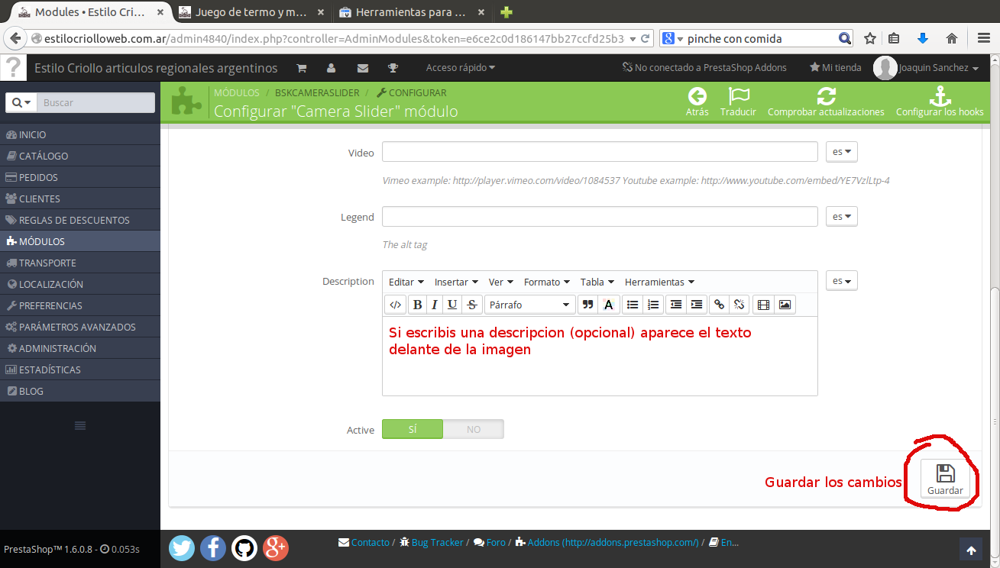

1. Vamos al menu Modulos.

2. Buscamos el modulo Camera slider.

3. Podemos activar/desactivar, modificar, agregar o eliminar un rotador.

4. Si seleccionamos en modificar o Agregar(el boton +).

5. Agregamos una descripcion opcionalmente y Guardar.
